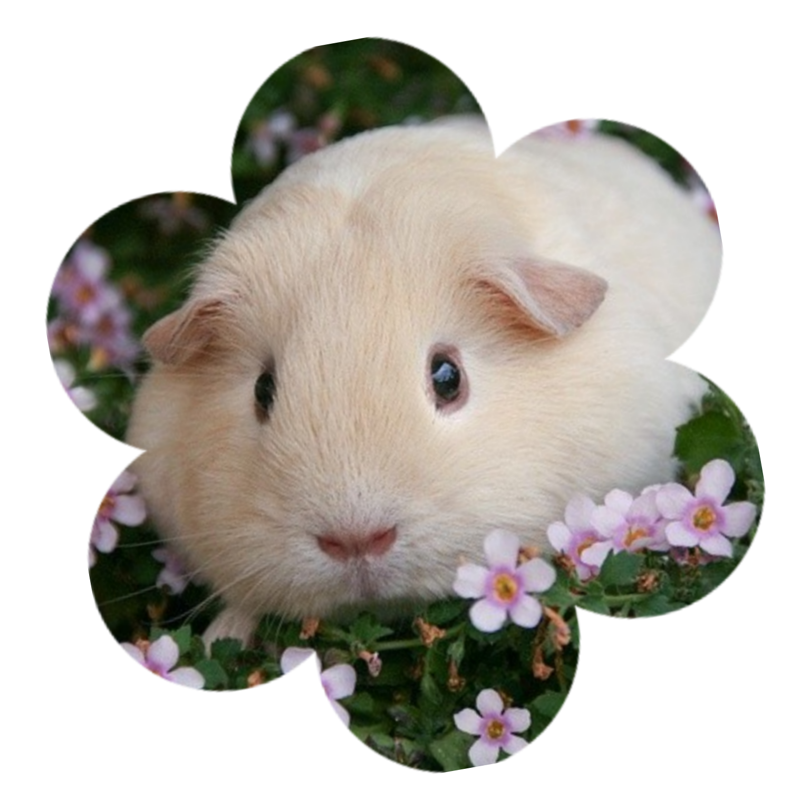
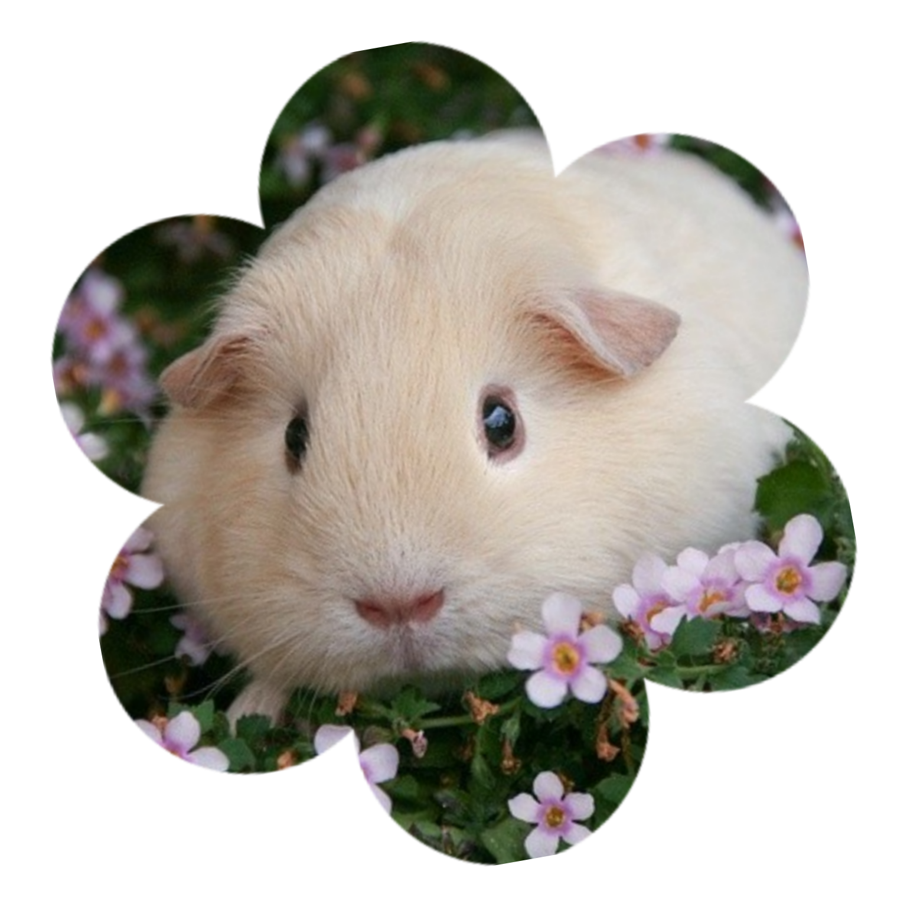

Найбільш довгошерстими серед свинок є перуанські. Їх шерсть може досягати півметра в довжину.
В той час, як більшість гризунів не здатні розрізняти кольори, морські свинки бачать світ кольоровим. Правда, все одно не так як бачимо його ми.
Предком морської свинки вважається доісторичний гризун Джозефоартігазія (Josephoartigasia monesi), який важив понад тонну і був завдовжки близько трьох метрів.
Вони зовсім не пристосовані до стрибків, і падіння навіть з невеликої висоти може серйозно їм нашкодити.
Батьківщиною морських свинок є Південна Америка.
Завагітнівши, самка морської свинки може у разі необхідності перервати або припинити вагітність без наслідків для свого організму.
У ДНК морських свинок хромосом на 18 більше, ніж у ДНК людини.
Офіційно зареєстрований рекорд по віку серед мурчаків — 15 років.
Стрибки на місці у морських свинок є проявом радості.
Як і в інших гризунів, наприклад, у щурів, зуби морських свинок ростуть протягом усього життя. Саме тому їм потрібно постійно гризти тверді предмети або жорстку їжу, щоб їх сточувати.
Статева зрілість у тварин настає вже через приблизно 5 тижнів після народження.
На передніх лапках у них по 4 пальці, а на задніх тільки по 3.
Морські свинки запам’ятовують своїх господарів не лише за запахом, а й в обличчя.
Якщо їх погладити, вони іноді муркочуть, подібно до кішок.
Мурчаки мають високу температуру тіла, тому на спеці вони можуть легко перегрітися і отримати тепловий удар.
Ці гризуни повинні їсти свій кал, щоб бути здоровими – вони здатні засвоювати вітаміни груп До і тільки під час другого проходження містять їх продуктів по травному тракту.
Пеніцилін, що міститься в цвілі, є для мурчаків смертельною отрутою.
Морські свинки змушені постійно їсти маленькими порціями, через особливу будову травної системи.
Вага великих мурчаків може досягати 1,5 кг, а довжина 35 см.
Важко повірити, але в деяких районах Перу, Еквадору та Колумбії морських свинок розводять як курей і з них готують різноманітні страви.
У представників давно зниклої культури Мочик,а мурчаки вважалися божественними тваринами.
У тілі морської свинки 258 кісток. Для порівняння, у людини їх 206.
Першими людьми, приручившими морських свинок з сільськогосподарськими цілями, були інки, причому сталося це ще близько 7000 років тому.
Незважаючи на свою назву, морські свинки не є біологічними родичами свиней.
В Європу морські свинки були привезені експедицією Колумба.
Сплять морські свинки немало, але все одно вночі вони менш рухливі і активні, ніж вдень.
Морські свинки люблять проводити час, доглядаючи один за одним і за собою. Вони завжди дуже охайні і чисті.
Морські свинки дуже швидко розвиваються, вони народжуються переважно вкриті хутром та з відкритими очима і вже за день після народження вони можуть куштувати рослинну їжу.
Китайська назва цих тварин перекладається, як «миша-свиня».
Історично склалось, що морська свинка зіграли велику роль в медицині Південної Америки. В Андах де західна медицина або відсутня, або їй просто не довіряють навіть сьогодні, морська свинка використовується при лікуванні артриту.
 
